Work with Chart Elements
Move an Element
You can use the mouse or keyboard commands to move an element or a group of selected elements.
- Mouse: drag and drop an element.
- Keyboard: select an element and press arrow keys to move the element.
Press and hold Shift to move the element horizontally or vertically.
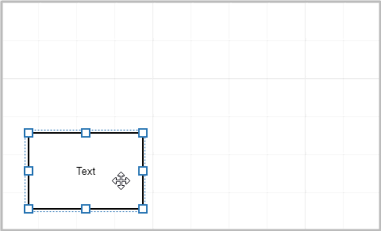
If the Snap to Grid option is enabled, an element is moved snapping to the grid. Press and hold Ctrl to move the element smoothly.
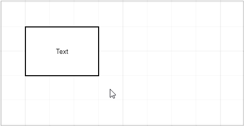
You can combine the Ctrl and Shift buttons.
Resize a Shape
Select a shape to display resizing squares along the selection.
Drag a square to resize the shape.
Press and hold Shift to maintain the shape's width-to-height ratio.
If the Snap to Grid option is enabled, a shape is resized snapping to the grid. Press and hold Ctrl to resize the element smoothly.
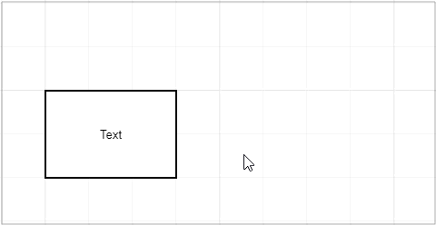
You can combine the Ctrl and Shift buttons.
Transform a Shape
Certain shapes display a transformation handle when selected. Use this handle to transform the shape.
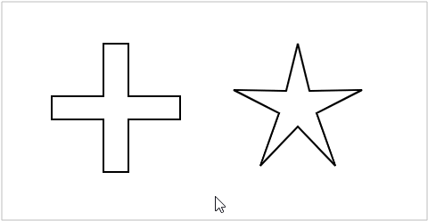
Edit an Element's Text
Double click an element to start text editing.
Edit the text. Press Enter to start a new line.
Press Ctrl+Enter or click outside the element to finish editing.
A connector can have several texts. A text box appears at the double-clicked position. After editing, you can use the mouse to move the text along the connector.
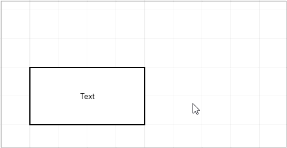
Clone an Element
Press Alt and drag an element to clone it.
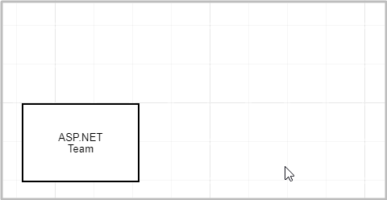
You can combine the Alt, Ctrl, and Shift buttons.
Link a Connector to a Shape
Hover the mouse pointer over a shape to display its connection points.
Drag a point to create a connector.
Release a connector at one of the following positions:
- at another shape's connection point to connect these points. In this case, the connector remains linked to the specified points if a shape is moved.
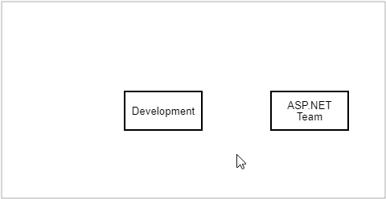
- at another shape to connect shapes without specifying particular points. In this case, the connector links to the nearest points if a shape is moved.
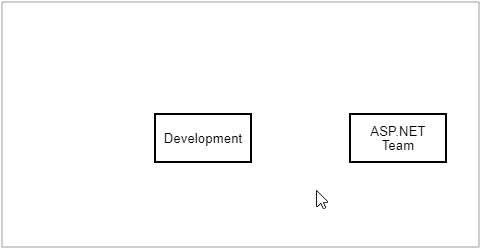
Drag a shape close to a connector's end to link the shape to the connector.
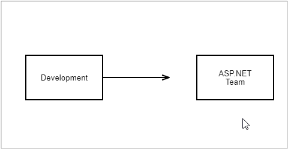
Create a Shape via the Context Toolbox
The Context Toolbox appears when you drag a connector from a shape and drop it without connecting it to another shape.
Select a shape to insert it at the end of the connector.
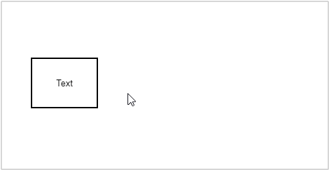
The Context Toolbox allows you to create a shape inside a container.
- Drag a connector from a shape while pressing Ctrl and release the connector inside a container.
- Select the shape you want to add. The shape is placed in the container's nested shape collection.
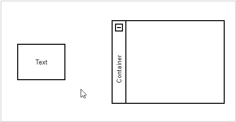
Modify a Connector
The Diagram tool can draw orthogonal and straight connectors.
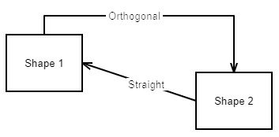
Specify a connector's line type in the Style tab on the Properties toolbar.
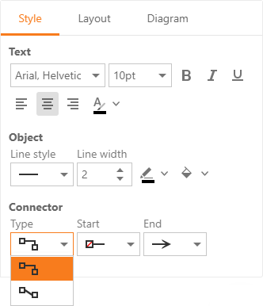
Orthogonal Connectors
You can move a connector's line segments.
- Select a connector to display its key points.
- Drag a point to move a line segment.
Straight Connectors
You can add line segments to connectors.
- Select a connector to display its key points.
- Drag a middle point to add a line segment.
To remove a key point, move it between neighboring points.
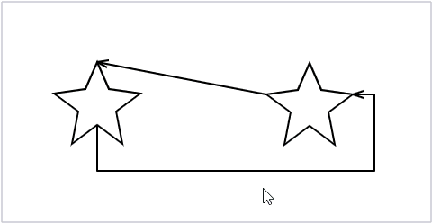